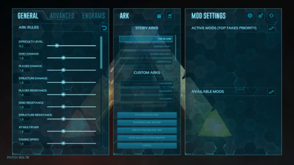
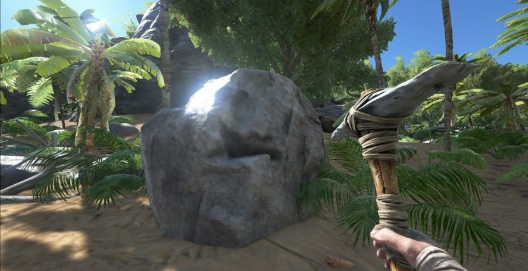
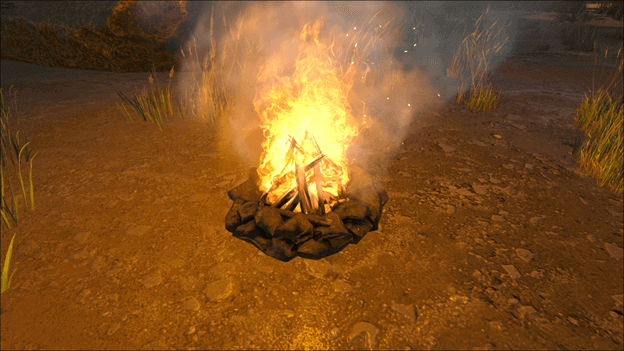
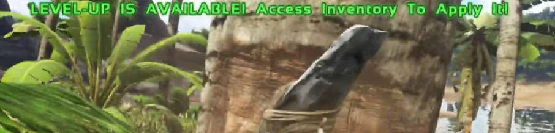
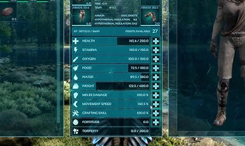
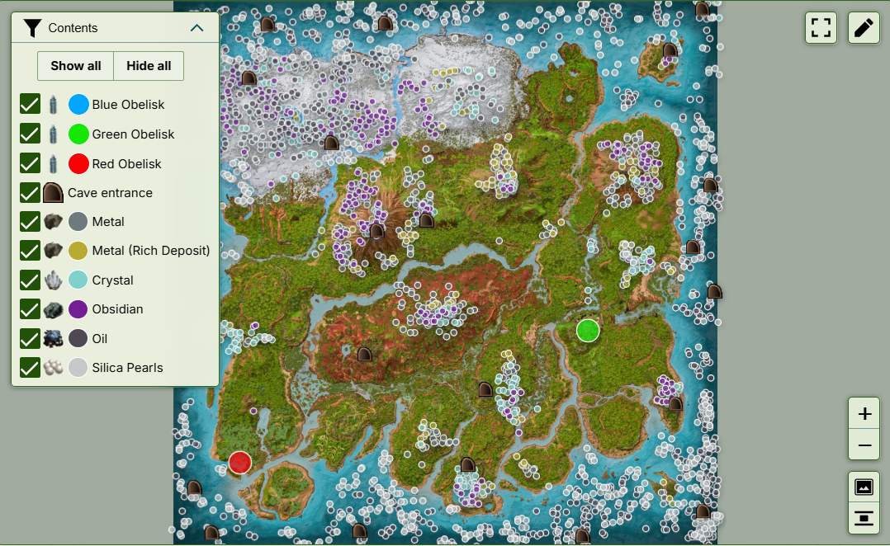
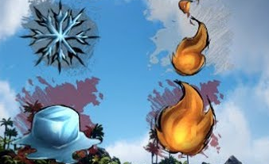
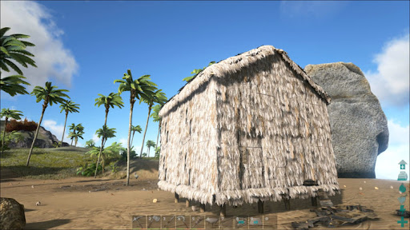

Osnove
Preživčjavanje u ARK-u može biti vrlo izazovno ako neznate što radite. Zato je bitno upoznati se s različitim mehanikama igre i svime ostalim što još nudi poput različitih vrsta dinosaura.
Početak igre:
Prije nego što uopče počnete igrati, morate odabrati mapu. Najbolje je odabrati The Island jer je prva mapa igre i najbolje je balansirana za početnike.
Nikako ne odabrati nikoju drugu story mapu jer nebudete mogli preživjeti jer su mnogo teže od ostalih mapa.
Nakon što ste odabrali mapu, igra će vas ponuditi sa par početnih lokacija. Uvijek je najbolje odabrati prvu, ali ako već hoćete negdje drugdje, odaberite "easy" jer ćak i iskusni igraći imaju poteškoća bilo gdje drugdje.


Kada ste ušli u igru, prvo što je najbolje napraviti je pickaxe.
Za to će vam trebati stone koji možete naći na podu i pokupiti sa interract tipkom, te wood i thatch koji možete nabaviti udaranjem drva šakama, kao u minecraft.
S vremenom će vam valjda biti potrebna i hrana i voda. Vodu je lako naći, ali pazite da ne otiđete pre daleko od nje.
Hranu možete nabaviti na dva načina. Ili skupljanje bobica iz grmova, ili dobivanjem mesa od ubijenih životinja.
Ako se već odlučite na meso, nemojte zaboravit ispeći ga u campfire-u.

Leveli i statistike:
S vremenom ste već skupili XP za level-up. Level-up možete postaviti u jednu od svojih statistika karaktera.
Sa svakim level-upom dobiju se i Engram Points. Ti engram pointsi se mogu iskoristiti kako bi otključali recepte za nove alate, građevine i opremu.

Nisu sve statistike vrijedne level-upa. One koje jesu su: Health, Stamina, Weight i Movement Speed.
Sa svakim level-upom, statistike vam otiđu gore za 10 bodova, osim za movement speed, koji je u postotcima i otiđe gore za 1,5%.
Hrana i voda nisu vrijedne level-upa, jer samo ćete morati rijeđe jesti i piti, ali i više pojesti i popiti, korisnije je level staviti u neke od ostalih statistika.

Resursi:
Također je bitno poznavati se sa resursima. To će vam olakšati craft-anje i ubrzati vaš razvoj.
Oni bitni resursi koji će vam uvijek trebati su Wood i Thatch, koji se dobiju iz drva, Stone i Flint, koji se dobiju iz kamenja, Fiber, koji se dobije iz grmova, te metal i kristal, koji se nalaze u svojim rudama.

Temperature:
U ARK-u se morate brinuti i o svojoj temperaturi kako bi preživjeli.
Ako vam je vruće, voda će vam se brže trošiti, ako vam je hladno, onda hrana, ako vam je ekstremno vruće ili hladno, gubit ćete health.
Ako vam je prehladno, budite blizu vatre da se ugrijete. Ako vam je prevruće, skinite odjeću sa sebe, ili otiđite u vodu.

Gradnja:

Gradnja u ARK-u je ključan dio preživljavanja jer je to ono što vam daje najveću sigurnost.
Potrebno je ispravno odabrati lokaciju gdje će te graditi, što je najbolje ako je ravno, blizi vode, i blizu ali ne pre blizu resursa, jer se ubuduće nećeju respawn-at.
Za gradnju je prvo potrebno craftat djelove i onda ih možete poćeti postavljat i sagradit vašu bazu.